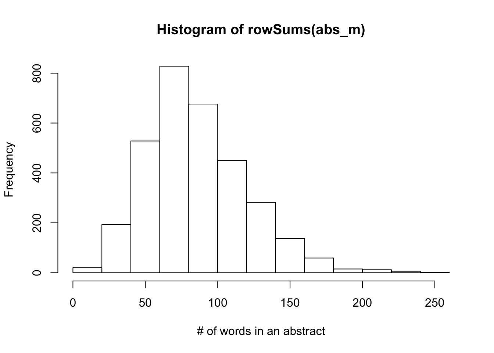
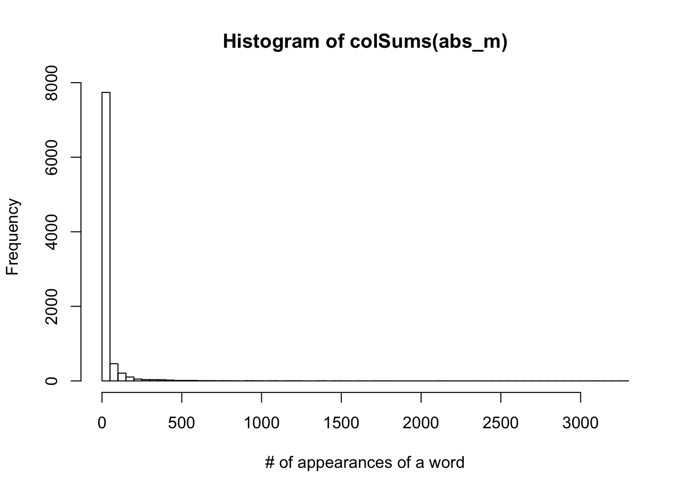

Last updated: 2020-09-27
Checks: 7 0
Knit directory: ebpmf_data_analysis/
This reproducible R Markdown analysis was created with workflowr (version 1.6.2). The Checks tab describes the reproducibility checks that were applied when the results were created. The Past versions tab lists the development history.
Great! Since the R Markdown file has been committed to the Git repository, you know the exact version of the code that produced these results.
Great job! The global environment was empty. Objects defined in the global environment can affect the analysis in your R Markdown file in unknown ways. For reproduciblity it’s best to always run the code in an empty environment.
The command set.seed(20200511) was run prior to running the code in the R Markdown file. Setting a seed ensures that any results that rely on randomness, e.g. subsampling or permutations, are reproducible.
Great job! Recording the operating system, R version, and package versions is critical for reproducibility.
Nice! There were no cached chunks for this analysis, so you can be confident that you successfully produced the results during this run.
Great job! Using relative paths to the files within your workflowr project makes it easier to run your code on other machines.
Great! You are using Git for version control. Tracking code development and connecting the code version to the results is critical for reproducibility.
The results in this page were generated with repository version 98381ac. See the Past versions tab to see a history of the changes made to the R Markdown and HTML files.
Note that you need to be careful to ensure that all relevant files for the analysis have been committed to Git prior to generating the results (you can use wflow_publish or wflow_git_commit). workflowr only checks the R Markdown file, but you know if there are other scripts or data files that it depends on. Below is the status of the Git repository when the results were generated:
Ignored files:
Ignored: .DS_Store
Ignored: .Rhistory
Ignored: .Rproj.user/
Ignored: analysis/ebpmf_bg_tutorial_cache/
Ignored: analysis/investigate_np_ebpmf_wbg_cache/
Ignored: analysis/pmf_greedy_experiment_cache/
Ignored: data/.DS_Store
Ignored: data/SLA/SCC2016/.DS_Store
Ignored: output/.DS_Store
Untracked files:
Untracked: data/SLA/SLA_preprocessed_minzhe.RData
Untracked: data/SLA/abs.sla.txt
Untracked: data/SLA/docword.sla_minzhe.txt
Untracked: data/SLA/vocab.sla_minzhe.txt
Note that any generated files, e.g. HTML, png, CSS, etc., are not included in this status report because it is ok for generated content to have uncommitted changes.
These are the previous versions of the repository in which changes were made to the R Markdown (analysis/data_preprocessing_sla.Rmd) and HTML (docs/data_preprocessing_sla.html) files. If you’ve configured a remote Git repository (see ?wflow_git_remote), click on the hyperlinks in the table below to view the files as they were in that past version.
| File | Version | Author | Date | Message |
|---|---|---|---|---|
| Rmd | 98381ac | zihao12 | 2020-09-27 | demo for processing SLA data, correction on vocab |
| html | 74b1de4 | zihao12 | 2020-09-27 | Build site. |
| Rmd | 02880ed | zihao12 | 2020-09-27 | demo for processing SLA data, correction on vocab |
| html | 95ee2cd | zihao12 | 2020-09-26 | Build site. |
| Rmd | d0af30f | zihao12 | 2020-09-26 | demo for processing SLA data |
SLA dataset: https://www.stat.uga.edu/sites/default/files/psji/SCC2016-with-abs.zip
I used the methods introduced in http://rstudio-pubs-static.s3.amazonaws.com/256588_57b585da6c054349825cba46685d8464.html
rm(list = ls())
library(readr)
library(tm)Warning: package 'tm' was built under R version 3.5.2Loading required package: NLPlibrary(Matrix)Warning: package 'Matrix' was built under R version 3.5.2sla <- read_csv("data/SLA/SCC2016/Data/paperList.txt")Parsed with column specification:
cols(
DOI = col_character(),
year = col_double(),
title = col_character(),
citCounts = col_double(),
abstract = col_character()
)## remove papers that do not have abstract
sla <- sla[!is.na(sla$abstract),]
str(sla)tibble [3,207 × 5] (S3: tbl_df/tbl/data.frame)
$ DOI : chr [1:3207] "10.1214/12-AOS1008" "10.1214/12-AOS1006" "10.1214/12-AOS1003" "10.1214/12-AOS1000" ...
$ year : num [1:3207] 2012 2012 2012 2012 2012 ...
$ title : chr [1:3207] "Rerandomization to improve covariate balance in experiments" "Realized {L}aplace transforms for pure-jump semimartingales" "Degrees of freedom in lasso problems" "Noisy matrix decomposition via convex relaxation: optimal rates in high dimensions" ...
$ citCounts: num [1:3207] 0 0 0 0 0 0 0 0 0 0 ...
$ abstract : chr [1:3207] "Randomized experiments are the \"gold standard\" for estimating causal effects, yet often in practice, chance i"| __truncated__ "We consider specification and inference for the stochastic scale of discretely-observed pure-jump semimartingal"| __truncated__ "We derive the degrees of freedom of the lasso fit, placing no assumptions on the predictor matrix X. Like the w"| __truncated__ "We analyze a class of estimators based on convex relaxation for solving high-dimensional matrix decomposition p"| __truncated__ ...abs_source <- VectorSource(sla$abstract)
# Make a volatile corpus: tweets_corpus
abs_corpus <- VCorpus(abs_source)
# Print out the tweets_corpus
abs_corpus<<VCorpus>>
Metadata: corpus specific: 0, document level (indexed): 0
Content: documents: 3207## show one abstract
str(abs_corpus[[15]])List of 2
$ content: chr "A standard tool for model selection in a Bayesian framework is the Bayes factor which compares the marginal lik"| __truncated__
$ meta :List of 7
..$ author : chr(0)
..$ datetimestamp: POSIXlt[1:1], format: "2020-09-27 15:10:17"
..$ description : chr(0)
..$ heading : chr(0)
..$ id : chr "15"
..$ language : chr "en"
..$ origin : chr(0)
..- attr(*, "class")= chr "TextDocumentMeta"
- attr(*, "class")= chr [1:2] "PlainTextDocument" "TextDocument"abs_corpus[[15]][1]$content
[1] "A standard tool for model selection in a Bayesian framework is the Bayes factor which compares the marginal likelihood of the data under two given different models. In this paper, we consider the class of hierarchical loglinear models for discrete data given under the form of a contingency table with multinomial sampling. We assume that the prior distribution on the loglinear parameters is the Diaconis-Ylvisaker conjugate prior, and the uniform is the prior distribution on the space of models. Under these conditions, the Bayes factor between two models is a function of the normalizing constants of the prior and posterior distribution of the loglinear parameters. These constants are functions of the hyperparameters (m, alpha) which can be interpreted, respectively, as the marginal counts and total count of a fictive contingency table.We study the behavior of the Bayes factor when alpha tends to zero. In this study, the most important tool is the characteristic function J(C) of the interior C of the convex hull (C) over bar of the support of the multinomial distribution for a given hierarchical loglinear model. If h(C) is the support function of C, the function J(C) is the Laplace transform of exp(-h(C)). We show that, when alpha tends to 0, if the data lies on a face F-i of (C) over bar (i), i = 1, 2, of dimension k(i), the Bayes factor behaves like alpha(k1-k2). This implies in particular that when the data is in C-1 and in C-2, that is, when k(i) equals the dimension of model J(i), the sparser model is favored, thus confirming the idea of Bayesian regularization.In order to find the faces of (C) over bar, we need to know its facets. We show that since here C is a polytope, the denominator of the rational function J(C) is the product of the equations of the facets. We also identify a category of facets common to all hierarchical models for discrete variables, not necessarily binary. Finally, we show that these facets are the only facets of (C) over bar when the model is graphical with respect to a decomposable graph."clean_corpus <- function(corpus){
corpus <- tm_map(corpus, stripWhitespace)
corpus <- tm_map(corpus, removePunctuation)
corpus <- tm_map(corpus, removeNumbers)
corpus <- tm_map(corpus, content_transformer(tolower))
corpus <- tm_map(corpus, removeWords, stopwords("en"))
# ## remove words that appear only once (this method seems to have memory issue?)
# tdm <- TermDocumentMatrix(corpus)
# tokens_to_remove <- findFreqTerms(tdm, 1, 1)
# corpus <- tm_map(corpus, content_transformer(removeWords), tokens_to_remove[1:5000])
return(corpus)
}
# Apply customized function to the abs_corpus: clean_corp
clean_corp <- clean_corpus(abs_corpus)
# Print out a cleaned up corp
clean_corp[[15]][1]$content
[1] " standard tool model selection bayesian framework bayes factor compares marginal likelihood data two given different models paper consider class hierarchical loglinear models discrete data given form contingency table multinomial sampling assume prior distribution loglinear parameters diaconisylvisaker conjugate prior uniform prior distribution space models conditions bayes factor two models function normalizing constants prior posterior distribution loglinear parameters constants functions hyperparameters m alpha can interpreted respectively marginal counts total count fictive contingency tablewe study behavior bayes factor alpha tends zero study important tool characteristic function jc interior c convex hull c bar support multinomial distribution given hierarchical loglinear model hc support function c function jc laplace transform exphc show alpha tends data lies face fi c bar dimension ki bayes factor behaves like alphakk implies particular data c c ki equals dimension model ji sparser model favored thus confirming idea bayesian regularizationin order find faces c bar need know facets show since c polytope denominator rational function jc product equations facets also identify category facets common hierarchical models discrete variables necessarily binary finally show facets facets c bar model graphical respect decomposable graph"abs_dtm <- DocumentTermMatrix(clean_corp)
abs_m <- as.matrix(abs_dtm)
## remove terms that appear only once, not very elegant ...
idx <- (colSums(abs_m) > 1)
abs_m <- abs_m[, idx]
abs_m[148:158, 10:22] Terms
Docs abilities ability able abos abovementioned abramovich abrupt abruptly
148 0 0 0 0 0 0 0 0
149 0 0 0 0 0 0 0 0
150 0 0 0 0 0 0 0 0
151 0 0 0 0 0 0 0 0
152 0 0 0 0 0 0 0 0
153 0 0 0 0 0 0 0 0
154 0 0 0 0 0 0 0 0
155 0 0 0 0 0 0 0 0
156 0 0 0 0 0 0 0 0
157 0 0 0 0 0 0 0 0
158 0 0 0 0 0 0 0 0
Terms
Docs absence absent absolute absolutely absorber
148 0 0 0 0 0
149 0 0 0 0 0
150 0 0 0 0 0
151 0 0 0 0 0
152 0 0 0 0 0
153 0 0 0 0 0
154 0 0 0 0 0
155 0 0 0 0 0
156 0 0 0 0 0
157 0 0 0 0 0
158 0 0 0 0 0hist(rowSums(abs_m), xlab = "# of words in an abstract")
| Version | Author | Date |
|---|---|---|
| 95ee2cd | zihao12 | 2020-09-26 |
## to make the plot more readable, I limit y axis
hist(colSums(abs_m), xlab = "# of appearances of a word", breaks = 100)
| Version | Author | Date |
|---|---|---|
| 95ee2cd | zihao12 | 2020-09-26 |
stopwords("en")), as well as numbers.writeMM(obj = as(abs_m, "sparseMatrix"),file = "data/SLA/docword.sla.txt")NULLwriteLines(text = abs_dtm$dimnames$Terms[idx],con = "data/SLA/vocab.sla.txt")
writeLines(text = sla$title,con = "data/SLA/title.sla.txt")
writeLines(text = sla$DOI,con = "data/SLA/doi.sla.txt")
writeLines(text = sla$abstract,con = "data/SLA/abs.sla.txt")
sessionInfo()R version 3.5.1 (2018-07-02)
Platform: x86_64-apple-darwin15.6.0 (64-bit)
Running under: macOS 10.15.6
Matrix products: default
BLAS: /Library/Frameworks/R.framework/Versions/3.5/Resources/lib/libRblas.0.dylib
LAPACK: /Library/Frameworks/R.framework/Versions/3.5/Resources/lib/libRlapack.dylib
locale:
[1] en_US.UTF-8/en_US.UTF-8/en_US.UTF-8/C/en_US.UTF-8/en_US.UTF-8
attached base packages:
[1] stats graphics grDevices utils datasets methods base
other attached packages:
[1] Matrix_1.2-17 tm_0.7-7 NLP_0.2-0 readr_1.3.1
[5] workflowr_1.6.2
loaded via a namespace (and not attached):
[1] Rcpp_1.0.5 compiler_3.5.1 pillar_1.4.4 later_0.8.0
[5] git2r_0.26.1 tools_3.5.1 digest_0.6.25 evaluate_0.14
[9] tibble_3.0.1 lifecycle_0.2.0 lattice_0.20-38 pkgconfig_2.0.3
[13] rlang_0.4.6 cli_2.0.2 yaml_2.2.0 parallel_3.5.1
[17] xfun_0.8 stringr_1.4.0 knitr_1.28 xml2_1.2.0
[21] fs_1.3.1 vctrs_0.3.0 hms_0.4.2 rprojroot_1.3-2
[25] grid_3.5.1 glue_1.4.1 R6_2.4.1 fansi_0.4.1
[29] rmarkdown_2.1 magrittr_1.5 whisker_0.3-2 backports_1.1.7
[33] promises_1.0.1 htmltools_0.3.6 ellipsis_0.3.1 assertthat_0.2.1
[37] httpuv_1.5.1 stringi_1.4.3 slam_0.1-45 crayon_1.3.4